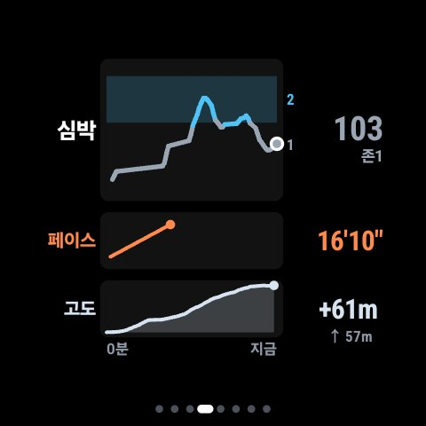
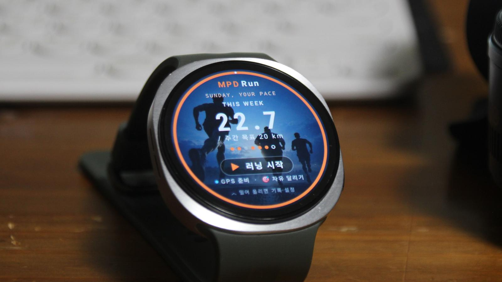
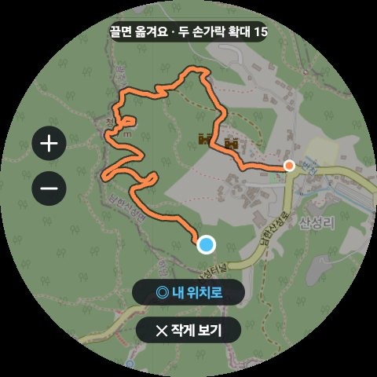
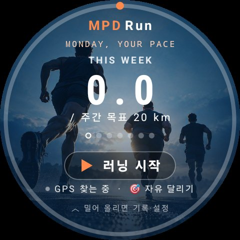

1km
귀에 대고 말하는
완주 코치

🔊 “이대로면 목표보다
1분 35초 빨리 들어와요”
1분 35초 빨리 들어와요”
- ⏱남은 길 필요 페이스
- 💓존2 넘으면 진동
- 📋끝나면 판단·고칠 점
2km
달린 길이
사진 일기 카드로
아침 한강 러닝10월 26일 · 러닝
🏠 집 근처 500m 가림


10.0km58:20시간5'50"/km
공유 카드 예시 · 카톡으로 보내면 앱 없이 열려요

3km
따로 달려도
같이 달리기
이번 주 순위 다른 동네 · 다른 시간도 OK
01뚱23.1km
02꼬18.4km
03떡12.7km
👻 지난 기록과 겨루기 · 120m 앞 🔊
화면 예시 · 숫자는 보기용이에요
결승선.
이제 받아 보세요.
안드로이드 휴대폰과 갤럭시워치에서 쓸 수 있어요.

만든 곳: 뚱꼬떡 개발팀